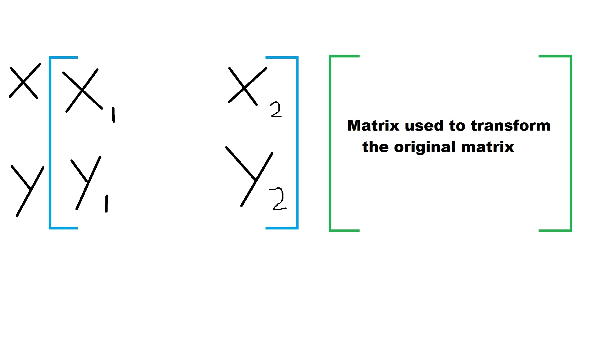
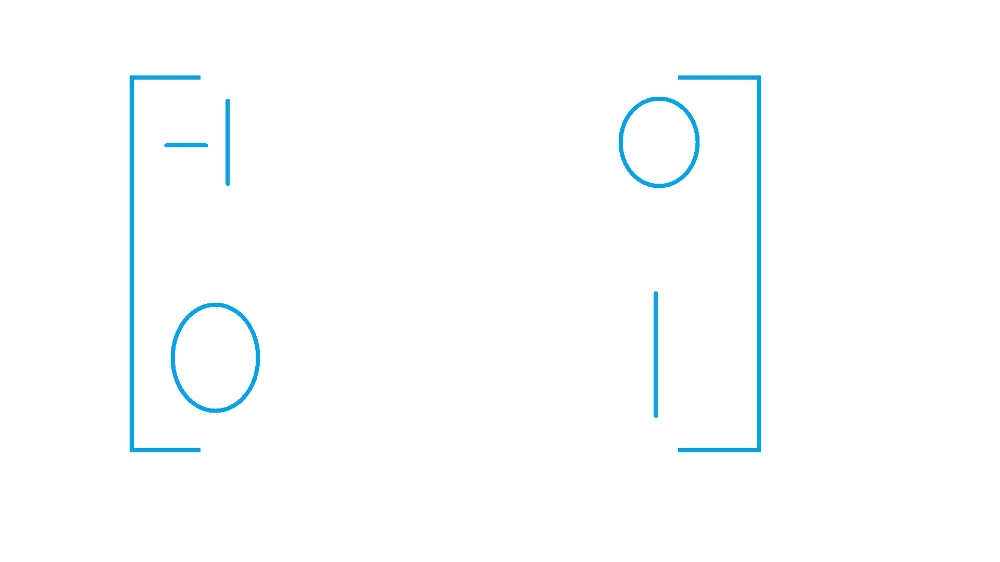
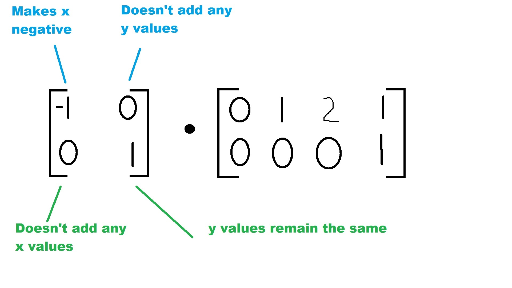
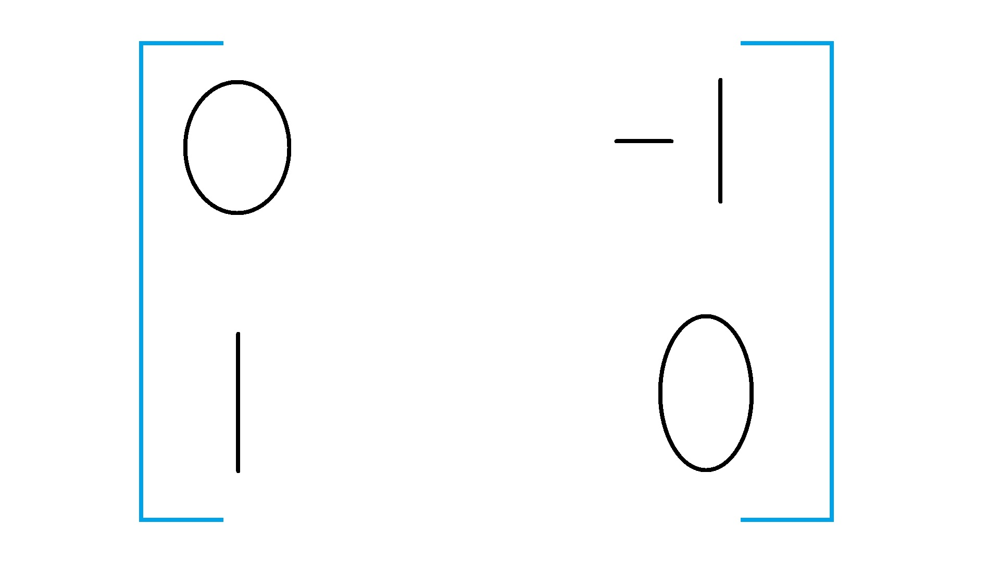

To perform transformations you have 1 matrix that represents the points you're working with. You have another matrix which will perform the given transformation
For translations, these 2 matrices must have the same dimensions, otherwise you would get extra, unwanted points. This is really simple and makes sense because of how matrices are added.
An example of a reflection matrix would be:
For reflections, the matrices are multiplied. Matrix multiplication is not commutative, so the reflection matrix must go in front
This example matrix reflects the points across the x-axis.
Reflections make a lot of sense because of basic matrix multiplication you'll have to know some basic matrix multiplication to understand this
By making the x negative, but leaving everything else the same, this reflects the given points across the x-axis
An example of a rotation matrix would be:
This makes sense because of matrix multiplication (again). This takes the negative y-value, and makes it the x-value. The original x-value becomes the y-value. This produces a rotation of 90 degrees counter-clockwise
| Contact | Stuff | More Stuff | Super Secret Stuff |
|---|